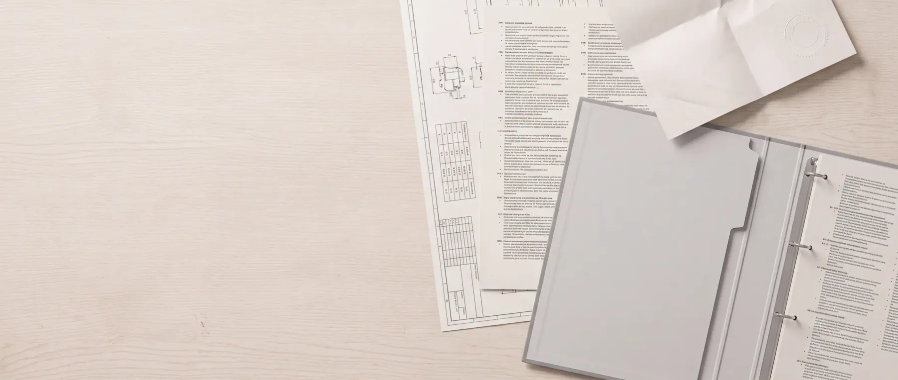

ÁSZF vállalkozásoknak
Fogyasztónak nem minősülő vásárlók részére. Magánszemélyként a fogyasztói változat vonatkozik Önre.

Melyik vonatkozik Önre
Két szerződés, két vásárlói kör
A magyar jog a fogyasztóra olyan kötelező szabályokat ír elő — 14 napos elállási jog, kötelező jótállás, termékszavatosság, békéltető testület —, amelyek a vállalkozásokra nem vonatkoznak. Ezért két külön szerződésünk van.
- Ezt a lapot olvassa, ha cégként, intézményként vagy egyéni vállalkozóként, a szakmája körében rendel.
- A másik dokumentum a fogyasztóknak szóló ÁSZF.
- Hatályos: 2025. január 15.
Bevezetés
Preambulum
Jelen Általános Szerződési Feltételek (a továbbiakban: ÁSZF) az ÖkoTech-Home Kft. mint Eladó (továbbiakban: Eladó vagy Vállalkozó) és a megrendelő (a továbbiakban: Megrendelő, együttesen: Felek), jogait és kötelezettségeit, a szerződéskötés feltételeit szabályozzák.
Eladó által üzemeltetett weboldal (Biológiai szennyvíztisztító rendszer — ÖkoTech-Home Kft., okotechhome.hu) célja, hogy a rajta elérhetővé tett berendezéseket és a többi feltüntetett szolgáltatást, terméket az Eladó üzletszerűen értékesítse.
A társaság szolgáltatásait https://okotechhome.hu/megrendeles az Eladó valamennyi Ügyfele jogosult igénybe venni, érvényes és sikeres regisztrációt követően, vagy akár regisztráció nélkül is a megrendelőlap kitöltésével, aláírásával és online történő visszaküldésével. A megrendelőlap kitöltésével és online megküldésével a Megrendelő kifejezetten tudomásul veszi, hogy nyilatkozata fizetési kötelezettséget von maga után.
Az Eladó szolgáltatásait igénybe vevő valamennyi Megrendelő kijelenti, hogy elolvasta és elfogadja és magára nézve kötelezőnek ismeri el a jelen ÁSZF-ben foglaltakat.
A weboldalon feltüntetett termékek képpel és leírással kerülnek bemutatásra. Mindezek mellett az Eladó figyelmezteti az Ügyfelet, hogy a weboldalon található képek csak illusztráció céljára szolgálnak és azok a valóságban eltérhetnek a képen látottaktól.
Jelen ÁSZF minden szerződésre és szolgáltatásra vonatkozik, amelyet Eladó és Megrendelő a fent megjelölt Honlapon keresztül kötnek, függetlenül attól, hogy annak teljesítése Magyarországról vagy külföldről, az Eladó vagy közreműködője által történik. Amennyiben Megrendelő az ügyletkötés során jogi személy képviseletében vagy egyéni vállalkozóként jár el, jelen ÁSZF elfogadásával úgy nyilatkozik, hogy a szerződést szakmájával, önálló foglalkozásával, üzleti tevékenységével összefüggő célok érdekében köti, így nem minősül sem a Polgári Törvénykönyvről szóló 2013. évi V. törvény (továbbiakban: Ptk.) 8:1. § (1) bekezdés 3. pontja szerint, sem pedig a fogyasztóvédelemről szóló 1997. évi CLV. törvény (továbbiakban: Fgytv.) 2. § a) pontja szerint fogyasztónak.
Az Eladó tájékoztatja a Megrendelőt, hogy szennyvíztisztító berendezés alkalmazása engedélyhez kötött. A szennyvíztisztító berendezés alkalmazásához szükséges engedély megszerzése a Megrendelő kötelezettsége, így az engedély iránti kérelemhez szükséges valamennyi dokumentum beszerzése, az engedélyeztetési eljárás lebonyolítása az ahhoz kapcsolódó ügyintézéssel, valamint valamennyi felmerülő költség viselése a Megrendelő feladata. A Megrendelő tudomásul veszi, hogy az Eladó nem vállal felelősséget az engedély nélküli megrendelésből és telepítéséből eredő bárminemű költségekért, bírságokért vagy károkért.
Szerződő fél
Eladó adatai
Cégnév: ÖkoTech-Home Kft.
Székhely: 2500 Esztergom, Csendesvölgy utca 27.
Levelezési cím: 2500 Esztergom, Csendesvölgy utca 27.
E-mail cím: kapcsolat@okotechhome.hu
Telefon: (06) 33/200-211
Fax: (06) 70/466-7704
Cégjegyzékszám: 11-09-008852
Adószám: 12268687-2-11
Bankszámlaszámok:
CIB Bank:
Forint számla: 10700268-70877618-51100005
IBAN: HU80107002687087761851100005
Kötelezettségek
Eladó kötelezettségei
- Eladó kötelezettsége jelen ÁSZF szerint, a megrendelt termék elkészítése, igény esetén kiszállítása, a termék tulajdonjogának átruházása és a Megrendelő által igényelt egyéb megrendelőlapon megrendelt és rögzített szolgáltatás kivitelezése.
- Eladó kötelezettségeit telepítés esetén műszaki átadás-átvételi eljárás keretein belül munkalap kitöltésével és átadásával teljesíti.
- Ha a Megrendelő az átadás-átvételi eljárást nem folytatja le, vagy nincsen jelen a helyszínen a teljesítés joghatásai a tényleges birtokbaadás alapján állnak be. A teljesítéséhez az Eladó a dolog tulajdonjogának átruházására köteles, a dolog átadásával és az ellenérték megfizetésével kerül a Megrendelő tulajdonába.
- A Megrendelő tudomásul veszi és kifejezetten hozzájárul a szerződés megkötésével, hogy az általa megrendelt szennyvíztisztító és szennyvízkezelő berendezések kapcsán elállás nem illeti meg, valamint a teljes mértékben teljesített szolgáltatások esetén elállási/felmondási jogát elveszíti.
- A megrendelés során a „Szállítási cím” megadása esetén Eladó köteles a terméket a Megrendelőhöz továbbítani, illetve annak továbbításáról gondoskodni a megrendelés során a Megrendelő által a „Szállítási mód” alatt megjelölt módon. A fuvarozás – megrendelőlapon feltüntetett – díját Megrendelő viseli. A termék jelen pontban meghatározott módon történő átvétele esetén Megrendelő a megrendelés során az alábbi fizetési módok közül választhat: előre banki átutalás vagy előre bankkártyás fizetés. Árut az Eladó csak teljes vételár előre megfizetése esetén szállít ki és a szolgáltatást is csak annak ellenértékének teljes előzetes megfizetését követően a vállalt határidőben végzi el. Részletfizetés nem lehetséges.
- Eladó köteles a terméket a szerződésben meghatározott mennyiségben, minőségben és leírás szerint szolgáltatni. Eladó a telepítés során köteles a gépészet működését kipróbálni, azt bemutatni a Megrendelőnek vagy használati útmutatót biztosítani.
Kötelezettségek
Megrendelő kötelezettségei
- Megrendelő jelen ÁSZF rendelkezései szerint köteles megfizetni a vételárat és átvenni a terméket.
- Vételár megfizetése: A Megrendelő ezen kötelezettsége magában foglalja mindazon intézkedések megtételét és alakiságok megtartását, amelyek a szerződés vagy bármely jogszabály, különösen a Ptk. rendelkezései értelmében a fizetés teljesítésének lehetővé tételéhez szükségesek. Megrendelőnek – ha a Felek máshogy nem állapodnak meg vagy jelen ÁSZF-ből más nem következik – a fizetést azelőtt kell teljesítenie, mielőtt az Eladó jelen ÁSZF-nek megfelelően a Megrendelő rendelkezésére bocsátja a terméket. Az Eladó a fizetés teljesítését a termék, illetve az okmányok átadásának feltételévé teheti. A végösszeg egészét a Megrendelőnek a termék kiszállítás napját megelőző munkanapig meg kell fizetnie az Eladó részére, de legkésőbb a kiszállításkor. Ennek hiányában a szállítás megtagadható, illetve nem vehető le a termék a szállító járműről. A fizetési késedelem kizárja az Eladó késedelmes teljesítését.
- A Megrendelő a termékek megvizsgálása hiányában is köteles megfizetni a vételárat. A Vállalkozóval régebbi üzleti kapcsolatban lévő, rendszeres Megrendelők esetén – külön megállapodás alapján – lehetőség van a vételár jelen ÁSZF-től eltérő időpontban történő utólagos, vagy határidőre történő megfizetésére is.
- Megrendelő jelen ÁSZF szerint köteles az Eladónak járó díjat megfizetni, a munkavégzés helyét a kivitelezéshez alkalmassá tenni, valamint a terméket átvenni.
- A munkafolyamat során keletkezett építési hulladék elszállításáról a Megrendelőnek kell gondoskodni, ennek költsége a Megrendelőt terheli. Megrendelő kötelezettségei közé tartozik a munkálatokhoz szükséges áram biztosítása is.
- Amennyiben a kiviteli munka Megrendelőnek felróható okból nem kezdhető el, vagy folyamatosan nem végezhető, úgy az Eladó a teljesítési határidőre vonatkozóan egyoldalú határidő módosítást hajthat végre.
- Amennyiben a Megrendelő telephelyi átvétellel szándékozik terméket vásárolni és a készre jelentést követő 8 napon túl nem szállítja el, vagy pedig az előre megállapodott időpontig nem szállítja el, az Eladó tárolási díjat számít fel, melynek mértéke: 3.000 Ft+ÁFA/nap.
- Amennyiben a Megrendelő a felszólítás ellenére 30 napon túl nem szállítja el a megrendelt termékeket, úgy az Eladó vállalkozó jogosult azt harmadik személy felé értékesíteni amellett, hogy jogosult a Megrendelő által fizetett díj 30%-át megtartani meghiúsulási kötbér címén.
- Amennyiben a Megrendelő kéri a termék kiszállítását, úgy az előre egyeztetett időpontban a Megrendelő költségére történik.
- Amennyiben a kiszállítási hely nehezen megközelíthető, valamilyen módon akadályoztatott, esetleg a területre történő behajtás engedélyköteles, úgy az alkalmassá tétel a Megrendelő feladata.
- Amennyiben a szállítás a Megrendelő hibájából meghiúsul, úgy az Eladó az újbóli kiszállítás díját a Megrendelőre terheli. Az ily módon kialakult újbóli kiszállítás kizárja az Eladó késedelmes teljesítését.
Szállítás
Szállítási és fizetési feltételek
- A weboldalon kiválasztott és megrendelt terméket az Eladó a Megrendelőnek e-mailben küldött rendelési visszaigazolásban szereplő időpontig szállítja ki a Megrendelő által a megrendelés során jelzett szállítási címre.
- A megrendelt Terméket az Eladó a megrendelést követő visszaigazoló e-mailben meghatározott szállítási időn belül köteles szolgáltatni, a szállítási idő a vételár teljes kiegyenlítését követő nap kezdődik. A szállítás fuvarozó cég igénybevételével, kivételesen saját fuvareszközzel történik. Meghatározott időpontra (órára) történő kiszállítást az Eladónak nem áll módjában vállalni, kivéve, ha erre vonatkozóan a felek külön írásban megállapodnak.
- Amennyiben egy Megrendelőnek lejárt, kifizetetlen számlája van, annak kiegyenlítéséig a kiszolgálást az Eladó szüneteltetheti, az újabb rendelés kiegyenlített vételárát a korábbi tartozásba beszámíthatja. A Megrendelő a késedelembe esés időpontjától kezdődően a késedelemmel érintett naptári félév első napján érvényes, Ptk. szerinti, vállalkozások közötti késedelmi kamatot köteles fizetni. A tartozások behajtásából származó valamennyi költséget a Megrendelő viseli.
- A Megrendelő köteles a kiszállítás vagy átvétel időpontjában a csomagot tételesen ellenőrizni és hiánytalan teljesítés esetén az átvételi elismervényt aláírni. Ezt követően hiányosságokra vonatkozó reklamációt az Eladónak nem áll módjában elfogadni. Amennyiben a Megrendelő bármilyen sérülést, eltérést tapasztalna, a fuvarozó a Megrendelő kérésére köteles tételesen átadni a Terméket és a helyszínen jegyzőkönyvet felvenni. Az így keletkezett károkért a fuvarozót terheli a felelősség.
- Az Eladó a szállítási díj változtatásának jogát fenntartja azzal, hogy a módosítás a weboldalon való megjelenéssel egyidejűleg lép hatályba. A módosítás a már megrendelt termékek vételárát nem befolyásolja.
- A jelen pontban szereplő valamennyi szállítási feltétel az e-mailen, telefonon és személyesen leadott rendelésekre egyaránt vonatkozik.
Megrendelés
A megrendelés folyamata
- Eladó által nyújtott termékekkel kapcsolatos ajánlatkérésre a weboldalon feltüntetett űrlap kitöltésével („Ajánlatkérés elküldése” gombra való kattintással) vagy személyesen van lehetőség.
- Az ajánlatkérés megérkezését követően az Eladó 48 órán belül megküldi a Megrendelő részére az ajánlattételi felhívás alapján összeállított ajánlatot elektronikus levél útján.
- Az ajánlat megküldését követően a Megrendelő 48 órán belül jogosult elfogadni azt, ezt követően Eladó ajánlati kötöttsége megszűnik. A jogviszony az ajánlat elfogadásával és Eladó részére történő visszaigazolásával jön létre.
- Megrendelő a megrendelés feladásával kijelenti, hogy a jelen Általános Szerződési Feltételeket elfogadja és magára nézve kötelezőnek ismeri el, valamint nyilatkozik, hogy nem minősül sem a Ptk. 8:1. § (1) bekezdés 3. pontja szerint, sem pedig a fogyasztóvédelemről szóló 1997. évi CLV. törvény (továbbiakban: Fgytv.) 2. § a) pontja szerint fogyasztónak. Megrendelő nyilatkozik továbbá, hogy Magyarországon bejegyzett jogi személy.
Teljesítés
A szerződés teljesítése
- Amennyiben Megrendelő nem rendelte meg a kapcsolódó szolgáltatási tevékenységet Eladótól, csak a terméket, úgy a szerződés a termék Megrendelőhöz történő megérkezésével és átvételével teljesül.
- A kapcsolódó szolgáltatási tevékenység végzésének feltételeit az Eladó úgy köteles megszervezni, hogy biztosítsa a tevékenység biztonságos, szakszerű, gazdaságos és határidőre történő befejezését.
- A telepítést az Eladó a Megrendelő igényeivel összhangban, külön megállapodás keretein belül tudja kivitelezni. A munkafolyamatokat akadályozó időjárási körülmények a kivitelezés befejezésének időpontját eltolhatják. A vállalási határidőt nagy mértékben befolyásolja az egyedi megállapodásban meghatározott munkafolyamatok elvégzésének időpontja.
- Az Eladó a Megrendelő utasítása szerint köteles eljárni. Ha a Megrendelő célszerűtlen vagy szakszerűtlen utasítást ad, az Eladó köteles őt erre figyelmeztetni. Ha a Megrendelő a figyelmeztetés ellenére utasítását fenntartja, az Eladó a szerződéstől elállhat vagy a feladatot a Megrendelő utasításai szerint, az ő kockázatára elláthatja. Az Eladó köteles megtagadni az utasítás teljesítését, ha annak végrehajtása jogszabály vagy hatósági határozat megsértéséhez vezetne, vagy veszélyeztetné mások személyét vagy vagyonát.
- Ha a teljesítés olyan okból válik lehetetlenné, amelyért egyik fél sem felelős, és
(1)a lehetetlenné válás oka az Eladó érdekkörében merült fel, díjazásra nem tarthat igényt,
(2) a lehetetlenné válás oka a Megrendelő érdekkörében merült fel, az Eladót a díj megilleti, de a Megrendelő levonhatja azt az összeget, amelyet az Eladó a lehetetlenné válás folytán költségben megtakarított, továbbá, amelyet a felszabadult időben másutt keresett vagy nagyobb nehézség nélkül kereshetett volna,
(3) a lehetetlenné válás oka mindkét fél érdekkörében vagy érdekkörén kívül merült fel, az Eladót az elvégzett munka és költségei fejében a díj arányos része illeti meg.
- Eladó a kötelezettségeit telepítés esetén műszaki átadás, átvételi eljárással teljesíti. Ha a Megrendelő az átadás-átvételi eljárást nem folytatja le, a teljesítés joghatásai a tényleges birtokbavétel alapján állnak be. A teljesítéséhez az Eladó a dolog tulajdonjogának átruházására köteles, a dolog átadásával és az ellenérték megfizetésével kerül a Megrendelő tulajdonába.
Raktározás
Raktározási megállapodás
- Amennyiben a megrendelt termék kiszállítási határideje a Megrendelő általi fizetést követő 1 hónapos határidőn túl kerül megállapításra Eladó és Megrendelő között automatikusan raktározási megállapodás (továbbiakban: Megállapodás) jön létre.
- A Megállapodás értelmében a megrendelt termék tulajdonjoga a Megrendelőre a díj megfizetésével átszáll, azonban tekintettel a későbbi kiszállításra a terméket Eladó a megállapított kiszállítási időpontig díjmentesen raktározza.
- Amennyiben a megállapított kiszállítási határidőig Megrendelő a terméket nem szállítja el vagy nem veszi át úgy Eladó a további raktározásért napi 3000,-Ft+ÁFA díjat számol fel.
Időpont
Időpontegyeztetés, lemondások kezelése
- Az időpont egyeztetés telefonon vagy írásban történik. A foglalt időpontról e-mailt küld Eladó, amelyet a Megrendelőnek vissza kell igazolni. Visszaigazolás elmulasztása esetén Eladó nem vállalja a kívánt időpontban történő helyszíni kiszállást.
- A 8.1. szerinti egyeztetett időpont legfeljebb egy alkalommal módosítható díjmentesen. Ismételt lemondás vagy módosítás esetén 15.000 Ft + ÁFA adminisztrációs díj kerül felszámításra. A munkanapon 16:00 óra után jelzett módosítást a következő munkanapon áll módunkban rögzíteni.
- Az egyeztetett időpontot legkésőbb a munkavégzést megelőző 2. munkanapon 16:00 óráig lehet díjmentesen lemondani vagy módosítani. E határidőn belüli vagy aznapi lemondás esetén a teljes kiszállási díj felszámításra kerül. Amennyiben a kiszállás nem az Vállalkozó érdekkörében felmerülő okból hiúsul meg, a kiszállási díjat nem áll módunkban elengedni.
- Amennyiben az előzetes felmérést/helyszíni szemlét követően az Eladó által megküldött ajánlat kiküldését követő 30 napon belül Megrendelő érvényes megrendelést tesz és átutalja az előleg összegét, úgy a felmérési/helyszíni szemle díj 50 százalékát a megrendelés összegéből jóváírjuk.
Fizetés
Fizetési feltételek
- A Megrendelő megrendelését a megrendelés visszaigazolását követően banki átutalással, vagy bankkártyás fizetéssel egyenlítheti ki.
- Az Eladó a kiválasztott fizetési módtól függően e-mailben számlát küld meg a Megrendelő által megadott e-mail címre, majd – ha a Felek ettől eltérően nem állapodtak meg, vagy jelen ÁSZF ettől eltérő rendelkezést nem tartalmaz – a Megrendelő által megfizetett összeg jóváírását követően szolgáltatja az Terméket/szolgáltatást Megrendelő részére az ÁSZF-ben rögzítettek szerint.
- Az Eladó a Megrendelő részére a Megrendelő által megfizetett összeg jóváírását követően – a Megrendelő által választott fizetési módtól függően – elektronikus úton megküldött számlát állít ki a Megrendelő által megadott e-mail címre (vagy a Megrendelő kifejezett kérésére postai úton a Megrendelő által megadott címre). Az ÁSZF elfogadásával a Megrendelő hozzájárul ahhoz, hogy számára az Eladó elektronikus úton megküldött számlát állítson ki. Ha a Megrendelő elektronikus úton megküldendő számlája vagy díjbekérője elkészül, az Eladó erről e-mailen keresztül értesíti/megküldi számára a számlát/díjbekérőt.
Szerzői jog
Szellemi tulajdon
- A weboldal és annak képi és szöveges, valamint szerkezeti kialakítása egyéni eredeti jelleget hordoz, így szerzői jogi védelem alatt áll. Az Eladó a szerzői jogi jogosultja a weboldalon megjelenített valamennyi tartalomnak: bármely szerzői műnek, illetve más szellemi alkotásnak.
- A jelen ÁSZF-ben kifejezetten meghatározott jogokon túlmenően a regisztráció, a weboldal használata, illetve az ÁSZF egyetlen rendelkezése sem biztosít jogot a Megrendelőnek a weboldal felületén található kereskedelmi nevek vagy védjegyek bármely használatára, hasznosítására.
Felelősség
Felelősség
- Az Eladó kizár minden felelősséget a Megrendelő által megvalósított esetleges jogsértésekért. Az Eladó kizárja a felelősségét a szállítási cím alatti kert, illetve telek állagának megóvásáért. A szállítójárműről való levétel és a termék elhelyezése közötti időszakban esetlegesen bekövetkező személyi, illetve tárgyi sérülésekért az Eladó nem vállal felelősséget, amennyiben azt nem ő végzi.
- Eladó a hibás teljesítésből eredő kártérítési kötelezettségét a teljesítés során részére megfizetett nettó díj 50%-ában korlátozza, ezt meghaladó összegben a kártérítési kötelezettségét kizárja. A felelősség korlátozása nem terjed ki a szándékosan okozott, továbbá az emberi életet, testi épséget vagy egészséget megkárosító károkozásért való felelősségre. Eladó ezen felül kizárja a felelősségét a hibás teljesítéshez fűződő következményi károk (pl. elmaradt haszon, jó hírnév sérelme stb.) megtérítéséért is.
- Az Eladó mentesül a felelősség alól, ha bizonyítja, hogy a szerződésszegést ellenőrzési körén kívül eső, a szerződéskötés időpontjában előre nem látható körülmény okozta, és nem volt elvárható, hogy a körülményt elkerülje vagy a kárt elhárítsa (vis maior körülmények).
Jótállás
Jótállás
- Eladó 1 év jótállást vállal a berendezésre és annak elektronikai részére, a műanyag tartályra pedig összesen 15 év kiterjesztett jótállást vállal. Ezen jótállás csak a berendezésre és annak részeire vonatkozik, nem terjed ki egyéb működési, felhasználási következményekre.
- A műanyag tartályra vonatkozó, összesen 15 éves kiterjesztett jótállási idő feltétele, hogy annak kiszállítását, szakszerű beszerelését és éves karbantartását is Eladó végezze. Ellenkező esetben a műanyag tartályra 1 év jótállást vállal Eladó.
- Amennyiben a berendezés a Megrendelő által, nem megfelelően, szakszerűtlenül, kerül telepítésre az Eladónak nem áll módjában jótállást vállalni. Ugyancsak nem áll módjában jótállást vállalni az Eladónak, amennyiben időjárási vagy egyéb természeti viszonyok miatt kár éri a Megrendelőt vagy a Megrendelő által telepített berendezést.
- A jótállásból eredő garanciális javítások érvényesítésében szerepet játszik a szakszerű használat, gondos karbantartás megléte, így amennyiben azok meglétét a Megrendelő nem tudja hitelt érdemlő módon igazolni az a jótállás korlátozásához vagy kizártságához vezethet.
Elállás
Elállás, felmondás
- Megrendelő tudomásul veszi és kifejezetten hozzájárul a szerződés megkötésével, hogy amennyiben számára egyedi megrendelésre készült a termék vagy a Megrendelő egyéni igényeihez igazított a termék – így különösen a szennyvíztisztító berendezések – azzal szemben elállási/felmondási jog nem illeti meg.
- Megrendelő a kapcsolódó szolgáltatási tevékenység kapcsán gyakorolt elállása vagy felmondása esetén köteles az Eladónak a megrendelés szerinti díj 30%-ának megfelelő mértékű kötbért megfizetni.
- Az egyéb Termékkel kapcsolatban Megrendelő általi elállás vagy felmondás esetén Eladó a kapcsolódó szolgáltatások megrendelésétől történő elállás esetén, amennyiben a szolgáltatást még nem teljesítette az Eladó a nettó szolgáltatási díj 30%-ának megfelelő összegű meghiúsulási kötbérre jogosult Eladó.
- Amennyiben a Megrendelő a jelen ÁSZF vagy a megrendelőlapon vállaltak valamely rendelkezését megszegi, az Eladó a szerződést jogosult azonnali hatállyal felmondani. Az Eladót a szerződés ezen okból történő felmondása esetén a Megrendelő által megrendelt szolgáltatások megrendelés szerinti nettó díjának 40%-ának megfelelő összegű meghiúsulási kötbér illeti meg, amelyet a Megrendelő a felmondásnak a kézhezvételétől számított 8 napon belül, egy összegben, átutalással köteles megfizetni.
- Amennyiben a Megrendelő csomagajánlatként igénybe vett szolgáltatások alapján kedvezményre volt jogosult, úgy az egyes szolgáltatásoktól való elállása esetén a csomagajánlat szerinti kedvezmény nem illeti meg. Ezek alapján elszámolási kötelezettsége keletkezik Eladóval szemben az igénybe vett kedvezmény erejéig, amelyet az elállását követő 8 napon belül, egy összegben, átutalással köteles megfizetni Eladó részére.
Hatály
Az ÁSZF közzététele és módosítása
- Jelen ÁSZF 2025. január 15. napján lép hatályba és azokat a ÖkoTech-Home Kft. weboldalán teszi közzé.
- Eladó jogosult az ÁSZF-ben foglaltakat jövőre kiterjedő hatállyal egyoldalúan módosítani. A módosított verzió a fent megjelölt weboldalon történő közzétételét követő naptári naptól hatályos, és a hatályba lépését megelőzően létrejött szerződéseket nem érinti.
Záró rész
Záró rendelkezések
- Jelen ÁSZF valamely részének érvénytelensége a többi pont érvényességére nem hat ki. Az ÁSZF valamely részének érvénytelensége esetén az érvénytelenné vált részt oly módon kell megváltoztatni, hogy azzal a Felek által célzott joghatás érvényesüljön.
- Amennyiben az ÁSZF és a Felek között létrejött egyéb megállapodás között ellentét van, az ÁSZF rendelkezései az irányadóak.
- A Honlap használatához szükséges azon technikai tájékoztatást, melyet jelen ÁSZF nem tartalmaz, a Honlapon elérhető egyéb tájékoztatások nyújtják.
- Amennyiben a Felek az esetleges jogvitát békés úton nem tudják rendezni, úgy a Budai Központi Kerületi Bíróság, illetve Tatabányai Törvényszék illetékességének kikötését elfogadják.
- A Megrendelő a megrendelése véglegesítése előtt köteles megismerni a jelen ÁSZF rendelkezéseit.
- A jelen ÁSZF-ben nem szabályozott kérdésekben a magyar jog, így különösen a Ptk. rendelkezései az irányadóak.
Kelt: Esztergom, 2025.03.13.
Gyakori kérdések
Amit a leggyakrabban kérdeznek
Miért más ez a szerződés, mint a fogyasztói?
Mert a fogyasztóra kötelező szabályok — 14 napos elállási jog, kötelező jótállás, termékszavatosság, békéltető testület — a vállalkozásokra nem vonatkoznak. Ami ezen a lapon áll, az a felek megállapodása.
Mennyi a jótállás vállalkozásként?
1 év a berendezésre és annak elektronikai részére, a műanyag tartályra pedig összesen 15 év kiterjesztett jótállás. A 15 év feltétele, hogy a kiszállítást, a szakszerű beszerelést és az éves karbantartást is mi végezzük — ellenkező esetben a tartályra is 1 év vonatkozik.
Melyik szerződés vonatkozik egyéni vállalkozóra?
Ez, ha a megrendelés a szakmája, önálló foglalkozása vagy üzleti tevékenysége körébe esik. Ha magánszemélyként, ettől függetlenül rendel, a fogyasztói ÁSZF az irányadó.
Letöltés
A dokumentum PDF-ben
Ugyanez a szöveg letölthető és nyomtatható formában. Az űrlapok visszaigazoló levele is ezt csatolja, hogy utólag is bizonyítható legyen, mi állt itt a beküldés pillanatában.